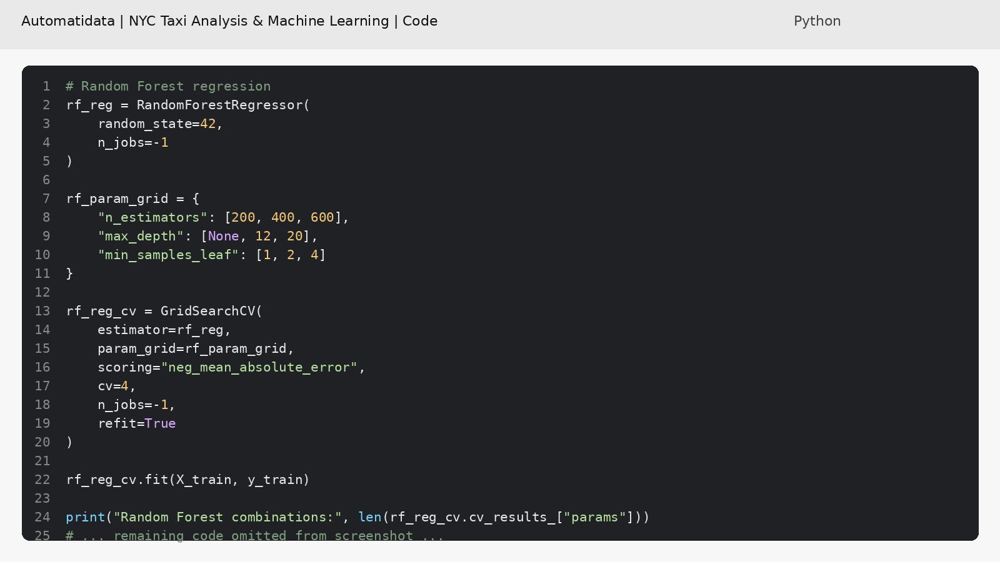

03 · Transportation analytics case study
Automatidata
NYC taxi analysis combining statistical comparison, fare prediction, and generous-tipping classification.

22,699trip records
$1.22observed mean fare gap
$3.55fare test MAE
0.645tip ROC AUC
01 · The problem
Start with the question the client actually needs answered.
The case asks what the taxi data can tell us about fares, payment groups, and generous tipping, while keeping the final test data untouched during model selection.
Key findingCredit-card trips had an observed mean fare about $1.22 higher than cash trips, with a 95% confidence interval of $0.87 to $1.56. The fare model performed much better on lower and mid-range fares than on the highest-fare segment.
What this meansThe statistical result is strong evidence of a difference between the observed payment groups, but it is not proof that payment method causes the fare difference. The fare model is useful for demonstrating the workflow, but its held-out error limits operational use.



02 · Evidence and approach
The technical work is here to support the answer, not replace it.
Gradient Boosting was selected by validation MAE for fare estimation. On the untouched test set it achieved $3.55 MAE, $16.41 RMSE, and 0.182 R². Random Forest was selected for generous tipping with 0.456 precision, 0.731 recall, 0.562 F1, and 0.645 ROC AUC.
What I checkedData quality, exploratory patterns, evaluation behavior, and the evidence behind the main conclusion.
How I evaluated itModel selection and final reporting were separated from the held-out test results wherever the notebook workflow allowed.
Why it mattersThe result is interpreted in terms of what a client can do next, not only which algorithm scored highest.
03 · Final analysisKey findingCredit-card trips had an observed mean fare about $1.22 higher than cash trips, with a 95% confidence interval of $0.87 to $1.56. The fare model performed much better on lower and mid-range fares than on the highest-fare segment. Business impactThe statistical result is strong evidence of a difference between the observed payment groups, but it is not proof that payment method causes the fare difference. The fare model is useful for demonstrating the workflow, but its held-out error limits operational use. Recommended actionUse the payment result as a question for deeper business investigation, not a causal claim. For fare prediction, segment error by fare range and collect stronger features before using predictions operationally.
What did the analysis actually answer?
This is the part a busy client can skim in 30 seconds.
Client takeaway
What I would want the client to remember.
The analysis found a measurable payment-group fare difference and a workable fare-prediction baseline, while also showing where prediction error becomes large. The practical value is in knowing what the current data can answer and what additional data is needed before operational use.
04 · Limitations and next steps
What the result can support, and what I would do next.
Limitations
The dataset is educational and observational. The fare model had a test R² of only 0.182 and much larger errors for fares above $16. Neither model should be presented as production-ready from this analysis alone.
What I would do next
- Investigate why payment groups differ after controlling for trip characteristics.
- Collect or engineer stronger route, time, and demand features for fare prediction.
- Evaluate the cost of false positives if the tipping classifier is used for prioritization.
Client takeaway
Use the payment result as a question for deeper business investigation, not a causal claim. For fare prediction, segment error by fare range and collect stronger features before using predictions operationally.